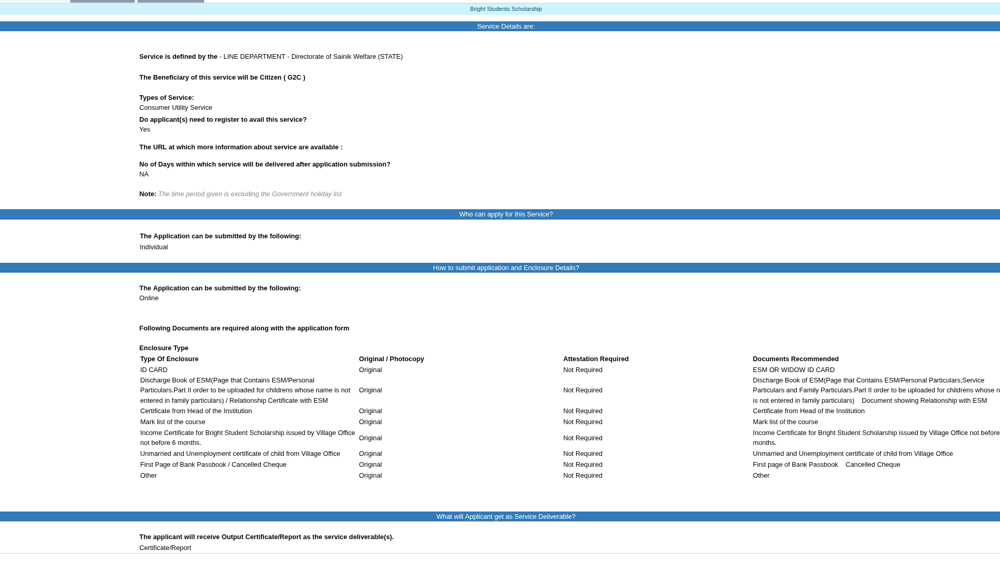

Bright Students Scholarship: children of ex-servicemen apply online on Service Plus
The Bright Students Scholarship from Kerala's Directorate of Sainik Welfare is live on the Service Plus portal (serviceonline.gov.in/kerala), where it is listed under the Directorate of Sainik Welfare with online submission. The scheme supports children of ex-servicemen studying from class 10 up to post-graduate, diploma and B.Ed courses. District Sainik Welfare offices have announced this year's round in the press with a last date of 30 November 2026; we could not find that date on an official page, so confirm it with your district office before you wait too long.
At a glance
- What: Bright Students Scholarship, Directorate of Sainik Welfare, Kerala, applied for online on the Service Plus portal (serviceonline.gov.in/kerala)
- Who: children of ex-servicemen; the district NIC listing also names widows of ex-servicemen as beneficiaries
- Courses: class 10 up to post-graduate, including diploma and B.Ed (per the current district announcement)
- Marks: at least 50% marks in aggregate in the previous year's annual exam
- Income limit: annual family income below ₹3 lakh
- Last date: 30 November 2026 as announced by district Sainik Welfare offices in the press; not shown on the official pages we checked, so confirm with your district office
Who can apply
- Children of ex-servicemen. The Kottayam district NIC page for the scheme names ex-servicemen and widows as the beneficiary group.
- Students studying in class 10 or above, up to post-graduate courses; the current announcement includes diploma and B.Ed courses.
- At least 50% marks in aggregate in the previous year's annual examination.
- Annual family income below ₹3 lakh. This matches the Kerala government's own 2023 announcement of the scheme; the department's older scheme list shows a lower figure for a related merit scholarship, so the income certificate you submit is what the district office will verify against.
Documents the portal asks for
From the official Service Plus service page, read on 10 November 2026. The portal lists originals; attestation is marked not required:
- ID card (the recommended document is the ex-serviceman's or widow's ID card)
- Discharge book of the ex-serviceman (the page with personal particulars Part II; for children whose name is not entered in family particulars, a relationship certificate with the ex-serviceman)
- Certificate from the head of the institution
- Mark list of the course
- Income certificate for the Bright Student Scholarship issued by the Village Office, not older than 6 months
- Unmarried and unemployment certificate of the child from the Village Office
- First page of the bank passbook, or a cancelled cheque
How to apply
Checked on the Service Plus Kerala portal on 10 November 2026:
- Open serviceonline.gov.in/kerala. This is the Kerala instance of the national Service Plus platform.
- Register as a citizen if you do not have an account; the service page says registration is required to apply.
- Find "Bright Students Scholarship" under the Directorate of Sainik Welfare in the services list, open it and use "Apply For Service".
- Fill the form and upload the documents listed above. Keep the income certificate recent: the portal says it must be issued within the last 6 months.
- After submitting online, check with your district Sainik Welfare office whether a printout or document copies are needed at the office, and confirm the 30 November 2026 last date reported for this year's round.

Keep these limits in mind
- The 30 November 2026 last date comes from district Sainik Welfare office announcements carried in the press on 9 November 2026. The official Service Plus page and the department website do not show a date for the current round, so treat 30 November as reported, not confirmed, and verify with your district office.
- The scholarship amount is not stated in the current announcement or on the Service Plus page. An older department list shows ₹2,000 to ₹3,500 a year for this scheme; we could not confirm the current amount.
- Only children of ex-servicemen (and, per the district listing, widows' families) are eligible; this is not a general scholarship.
- We read the public service page and announcements; we did not register, log in or submit an application, and nothing was paid.
Frequently asked questions
Where do I apply? Online on serviceonline.gov.in/kerala, under the Directorate of Sainik Welfare's "Bright Students Scholarship" service. Citizen registration is required first.
What is the last date? District Sainik Welfare offices announced 30 November 2026 for this year's round in the press. That date is not on the official online pages we checked, so confirm it with your district office.
Who is eligible? Children of ex-servicemen studying from class 10 to post-graduate, diploma or B.Ed, with at least 50% marks in last year's annual exam and family income below ₹3 lakh a year.
How much is the scholarship? Not stated for the current round. The department's older list shows ₹2,000 to ₹3,500 a year; we could not confirm the current amount.
Source: the Bright Students Scholarship service page on Service Plus Kerala (Directorate of Sainik Welfare), the Sainik Welfare Department's educational assistance page, the Kerala government portal's scheme announcement, and the 9 November 2026 district-office announcement reported in the press. Checked on the live pages on 10 November 2026. This is an AiCoN explainer, not a government publication.